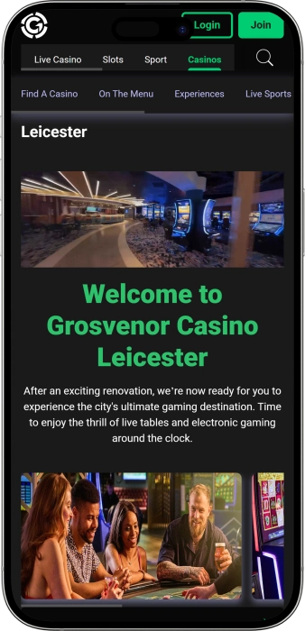

Exclusive welcome offer of
Exclusive welcome bonus of
Grosvenor Casino Leicester — tables, poker, sport and dining for a great night out
Top Casinos
Bonus Details
Casino
Bonuses
Rate
Free Spins
More Info
Get
Advantages
- Grosvenor Casino Leicester stands out for blending live tables with a strong electronic gaming area, making it easy to choose your pace and style.
-
24/7 slots and video poker.
-
Slot jackpots up to £20,000.
-
Live tables: roulette, blackjack, poker.
-
Electronic roulette for faster play.
-
Regular poker cash games and events.
-
Sports lounge with big-screen action.
-
Bar and restaurant for relaxed breaks.
- You can plan a full night out in one venue: gaming, poker, live sport and a proper meal without moving elsewhere. The overall feel is designed for easy-going entertainment with a clear layout and guest-focused service.
Grosvenor Casino Leicester App


About Grosvenor Casino Leicester
The venue stands out with an around-the-clock set-up and a strong mix of live tables and electronic gaming. A dedicated sports lounge plus comfortable facilities make it easy to stay longer.
- Slot jackpots up to £20,000.
- Big table wins can happen.
- Fast payouts on e-games.
Grosvenor Casino Leicester is a city-centre style venue that blends live tables with a modern electronic gaming area. It’s easy to choose your pace, from steady low-pressure play to more energetic sessions.
The space is typically arranged for smooth movement between tables, slots and relaxation zones. The atmosphere is built for a night out and socialising, not just gambling. Poker plays an important role for card-game fans. Slot players can enjoy a wide choice of themes and play styles. For those who like sport alongside gaming, live screenings add extra buzz. Bar and dining options help keep the visit comfortable and well-paced. Promotions and special offers add variety throughout the calendar. Overall, it’s a place where you can spend the whole evening—from play to downtime.
Grosvenor Casino Leicester: a modern night out with gaming at your pace
Grosvenor Casino Leicester feels like a modern city venue where convenience and energy are built into the experience. The mix of live tables and an electronic gaming area creates a two-speed atmosphere: you can settle into a classic table session or switch quickly to terminals and slots. Lighting, music and overall flow are generally tuned for an evening crowd that wants entertainment and a social buzz. It works well for a short stop-in or a full night out.
In terms of opening style, the venue is geared towards flexible access so guests can arrive when it suits them. Around-the-clock availability across key gaming areas makes it appealing for late visits and night-time meet-ups. At the same time, live tables and poker often feel most active during evening and late-night peaks. That rhythm helps the floor feel lively when demand is highest. It’s a natural fit for post-work plans and weekend nights.
The bar side is a core part of the overall feel because it sets the tone between sessions. You can usually expect options ranging from casual snacks and drinks to a more complete meal, which keeps the evening seamless. Live sport screenings add an extra layer of excitement and make the space more social—people come to watch as well as play. For groups, that’s ideal because different interests can coexist in one place. Breaks become part of the entertainment rather than downtime.
On accommodation, the casino sits within a city setting where nearby hotels are typically easy to find, from practical stays to more comfortable options. That matters for guests planning a late night or a weekend visit. Pairing a casino evening with an overnight stay adds comfort and reduces reliance on late transport. It also suits visitors travelling for poker events or themed nights. The result is a calmer, more predictable night-out plan.
Events and entertainment in this style of venue commonly revolve around poker, sport nights, themed activity and calendar-led specials. Poker audiences often benefit from a steady rhythm of cash games, tournaments and occasional series that encourage repeat visits. Sport fans appreciate busy weekends and major fixtures when the venue feels at its most electric. Seasonal offers help keep things fresh and varied. Overall, Grosvenor Casino Leicester tends to deliver a continuous stream of reasons to return, not just one-off promotions.
Loyalty and bonus programmes are usually built around guest registration and progressive rewards. They often unlock targeted offers, event invitations, priority service and added perks as your activity increases. For regulars, that can turn visits into a more comfortable and better-value experience. Newcomers typically start at a base level and build benefits over time. This structure supports both first-time visits and long-term play.
Service, payments and collecting winnings at Grosvenor Casino Leicester
Staff at Grosvenor Casino Leicester typically operate in a guest-first floor model: welcome at the entrance, support with registration and finding your way around, and help across tables, poker and hospitality areas. Dealers and floor teams generally keep play moving, apply rules consistently and guide guests through standard procedures without unnecessary pressure. Evenings can be busier, so smooth seating and queue handling matter. Newer players benefit from a calm, clear tone and practical guidance on where to start. Regulars tend to value speed, accuracy and efficient service.
English is the main language used throughout, though large city venues often have staff with additional languages at conversational level. If you need extra help, reception is usually the best place to ask for someone who can explain registration or basic procedures more clearly. Many key phrases at tables are standardised, so a modest level of English is often enough for comfortable play. Poker relies heavily on established routines and gestures, which reduces language friction. In bars and restaurants, communication is typically straightforward and guest-friendly.
The working currency in land-based casinos is the pound sterling, which is used for buy-ins, chip purchases and hospitality spend. Payment options commonly include cash and bank cards, with contactless payments available in many situations. At tables, the usual flow is to buy chips at the cashier or via the floor service, then place bets using chips. In slot areas, funding methods can vary by machine set-up, including cashier top-ups, tickets or venue-specific systems. It’s sensible to ask at the desk how your chosen area handles payments before you start.
ATMs are often located on-site or very close by, making it easy to withdraw cash without travelling far. Full currency exchange services are not guaranteed in every venue, so visitors with foreign currency are usually better off exchanging beforehand or using a card. If exchange is available, rates and fees can differ from high-street providers, which is worth keeping in mind. For larger amounts, planning ahead is safer than relying on on-the-spot terms. This approach reduces hassle and helps you keep control of your spend.
Collecting winnings in a land-based casino is typically done at the cashier: chips and machine tickets are exchanged for cash or other available payout methods. For larger sums, standard identity checks and source-of-funds processes may apply, which is normal across the industry. It can be practical to coordinate larger cash-outs outside peak times to avoid waiting. ID is commonly required, and in some cases proof of address may be requested depending on the transaction. With appropriate documents, the process is usually straightforward and formal.
Tax questions often come down to the local practice where gambling winnings for players are generally not subject to a separate player tax, but personal circumstances can vary. If you’re subject to rules in another country or you keep detailed financial records, it’s sensible to speak to a professional about your own reporting obligations. The casino itself typically won’t provide tax advice and will focus on standard identification requirements. Keeping receipts, tickets and transaction confirmations is helpful if you want a clear financial trail. This becomes especially useful for larger amounts or frequent visits.
Visiting rules at Grosvenor Casino Leicester: dress code, entry requirements and getting there
A land-based casino visit usually starts with age checks and basic admission steps, so carrying valid photo ID is important. Entry is strictly for adults, and staff may refuse admission if you cannot show ID or if behaviour standards aren’t met. Dress code is commonly smart casual to keep the venue comfortable and consistent in feel. Inside, respectful conduct is expected, with policies against aggression, excessive intoxication and disruptive behaviour. Filming and photography in gaming areas are often restricted for privacy and security reasons. Bag checks can happen selectively, and certain items may not be allowed. When playing for money, guests are expected to follow table rules and dealer instructions. The layout is typically organised into clear zones for tables, slots, poker and relaxation. When planning travel, consider city-centre busy periods and your arrival time. You can reach the venue on foot from central areas, by taxi, public transport or by car. If driving, plan parking in advance and understand access conditions. Overall, the rules are designed to protect safety and keep the experience enjoyable for everyone.
- • Dress code (smart casual): neat everyday clothing, appropriate footwear, tidy appearance; avoid tracksuits and overly casual gym-style outfits.
- • Entry requirements: 18+, valid ID; you may need to register as a guest and accept venue rules.
- • Prohibited: aggressive conduct, attempts to gamble on someone else’s account, interference with games, filming in restricted areas, bringing prohibited items.
- • Table etiquette: bet only when allowed, respect dealers and players, do not touch other players’ chips or cards.
- • Parking: use nearby city-centre parking options and any customer conditions; arrive early during peak times.
- • Getting there: taxis work well in the centre; public transport is typically followed by a short walk.
Grosvenor Casino Leicester loyalty programme: tiers, rewards and benefits
The loyalty programme at Grosvenor Casino Leicester is typically designed to turn repeat visits into tangible perks. The concept is straightforward: you register, become a member, earn activity through play and venue spend, then redeem rewards over time. Newcomers often benefit most from quick starter incentives such as targeted offers and welcome-style bonuses. Regular guests tend to value progression—more frequent and consistent activity often unlocks better service and warmer promotions. Loyalty is usually connected across gaming areas, poker and hospitality so the whole visit can be rewarded. In practical terms, members often find it easier to receive invitations to events, special days and limited-access activities. The programme also tends to work well alongside seasonal promotions and major sporting dates. A key element is personalisation, with offers shaped around your play preferences. Tier structures encourage planning visits and keeping bankroll discipline. Used sensibly, it adds value without pushing unnecessary risk. Overall, it functions as a growing package of perks that improves with your engagement.
Registration requirements:
- • Valid photo ID (passport/driving licence/other accepted ID).
- • Member form completion and acceptance of venue rules.
- • Card or digital profile issued on-site.
- • A common newcomer incentive can be £5–£20 as a voucher or gaming credit.
Tiers and how to reach them:
- • Base tier: immediate upon registration; unlocks offers and point earning.
- • Enhanced tier: earned through regular, steady activity; often adds faster accrual (e.g., +10–20% points).
- • VIP/premium: reached via high activity; may include priority service, event invitations and stronger rewards (e.g., +25–50% accrual or special vouchers).
Rewards and perks:
- • Points for play: redeemable for chips/credit; a typical value could equate to £5–£30 per month with moderate play.
- • Targeted offers: slot/e-gaming vouchers £10–£50 on selected days.
- • Food and drink comps: bar/restaurant vouchers £5–£25.
- • Poker benefits: buy-in discounts or promotional add-ons, e.g., £10–£40 value on select tournament days.
- • Event invitations: access to themed nights, big sport screenings or member-only games.
- • Boost days: double points (x2) during certain periods or happy hours.
Software Providers
Entertainment and Gaming at Grosvenor Casino Leicester
Bonuses, wins and special offers at Grosvenor Casino Leicester: promotions beyond loyalty
Beyond loyalty, Grosvenor Casino Leicester typically runs promotions that add variety to both gaming and the wider night out. Some offers focus on slots and electronic games, where short-term missions, prize draws or jackpot-driven periods are common. Live gaming can feature themed days with special side bets, enhanced payouts or event-style sessions. Poker often has its own promotional rhythm, with series and windows where rewards can be tied to activity as well as final results. Another category blends play with hospitality—menu deals, bundles and sport-led nights that make breaks feel part of the experience. Seasonal periods may bring calendar events linked to holidays, major fixtures and local dates. For guests, this is useful because you can pick a day with stronger value while keeping the same overall budget. Promotion terms are usually time-limited and may depend on specific games or minimum stakes. In practice, planning your visit around a promotion window can feel more rewarding. It’s also wise to notice any wagering-style conditions or payout caps where relevant. That mindset helps you enjoy offers without surprises. Overall, a lively promotion calendar makes each visit feel slightly different.
- • Slot jackpots: selected machines may feature jackpots up to £20,000, adding extra excitement with sensible bankroll control.
- • Free spins / free play: periodic slot offers, e.g., £5–£25 value or 10–50 spins on promo days.
- • Electronic roulette promos: terminal challenges with prizes, e.g., £20–£200 in vouchers for daily winners.
- • Slot tournaments: leaderboard-based events with prize pools, where prizes can range from £10 to £500+.
- • Poker promo payouts: high-hand or hourly hand bonuses; typical payouts might sit around £50–£250 in selected hours.
- • Tournament series: special buy-ins and prize-led schedules (calendar dependent), with an added value feel of £20–£200 for successful runs.
- • Sport nights: meal-and-drink bundles plus a small gaming add-on, e.g., a £5–£10 gaming voucher on selected dates.
- • Seasonal events: holiday and big-fixture promos with prize draws, e.g., £25–£300 in vouchers or gifts.
- • Night-out bundles: fixed packages combining food/drinks with a gaming bonus, often £10–£50 extra value.
Popular games at Grosvenor Casino Leicester: live-table classics and electronic favourites
Grosvenor Casino Leicester is commonly chosen for a broad game mix that suits both traditional tastes and fast-paced betting. Live tables appeal through atmosphere, dealer interaction and a controllable pace. Electronic formats attract players who like quicker rounds and the ease of dipping in for short sessions. Slots offer the widest variety of themes and bonus features, making them accessible for newcomers and engaging for experienced players. Roulette remains a top choice because the rules are easy to grasp and every spin feels like an event. Blackjack is often picked for its strategic decisions and the sense that your choices matter. Poker stands apart as a social, skill-led experience, especially in cash games and tournaments. Additional card games suit those who want to change tempo and try different probability patterns. Many guests enjoy mixing games across one evening—slots first, then tables, finishing with poker. Live sport screenings add extra buzz and complement the night-out feel. The result is a flexible selection that works for mood, budget and experience level. That versatility is what makes the game line-up consistently popular.
- • Roulette (live): classic vibe, bets on numbers and groups, strong spin-by-spin drama.
- • American roulette: a faster feel and distinct betting flavour for those who like pace.
- • Electronic roulette: quick rounds, easy short sessions, beginner-friendly comfort.
- • Blackjack: decision-based play versus the dealer, clear goals and strategy depth.
- • Poker (cash games): social format, flexible limits, long-term skill and reading opponents.
- • Poker (tournaments): fixed buy-in, rising pressure as players bust, strong competitive edge.
- • Three Card Poker: a faster card option built around simple hands and brisk dealing.
- • Slots: huge theme variety, bonus rounds, free spins and jackpot mechanics on selected machines.
- • Video poker: a slot-like poker hybrid where hold decisions and pay tables matter.
Betting limits at Grosvenor Casino Leicester: typical minimums and maximums
Betting ranges at Grosvenor Casino Leicester are typically set to suit different budgets—from careful starter stakes to more serious play. Minimums are often easiest to find on electronic games and on selected tables during quieter periods, while maximums depend on the specific table, shift limits and game format. For planning a comfortable night out, it helps to understand practical benchmarks across slots, electronic roulette, live roulette and blackjack, plus poker. The figures below are sensible guidelines based on common city-casino ranges; exact limits can vary by day, demand and table settings.
| Game Type | Minimum Bet | Maximum Bet |
|---|---|---|
| Slots | £0.10 | £2–£5 per spin |
| American Roulette (live) | £0.25 | £200 (per number) |
| Electronic Roulette (terminals) | £0.10 | £100 |
| Blackjack (live) | £1 | £500 |
| Casino Stud Poker | £2 | £50 |
| Jackpot Stud Poker | £1 | £1 (fixed) |
| Card Poker / variable poker format | £5 | £50 |
Events and entertainment at Grosvenor Casino Leicester: sport, poker, and late-night energy
Grosvenor Casino Leicester isn’t only about tables and slots; it’s a full evening-out venue where you can shape the night around your mood. A major draw is the sports lounge: big fixtures and tournaments on screen turn a standard visit into a high-energy viewing experience with a bar-style buzz. On those nights, people naturally alternate between watching and playing, creating waves of activity—match time, roulette, drinks, slots, then back again. It’s a format that works especially well for groups and anyone who enjoys variety rather than a single-track evening.
Poker is the second big entertainment line. Tournaments and cash games build a regular community feel, and poker adds a competitive, skill-influenced edge to the night. Even without headline series, local poker sessions often deliver that “event” feeling and make it easier to connect with the venue’s social atmosphere. On poker-heavy evenings, the vibe tends to feel more focused, with plenty of strategy chat and friendly rivalry.
For late-night “club-like” energy, the bar-lounge often plays the role that a nightclub would in other venues: music, lively seating, and a stronger social rhythm as the night progresses. Depending on the day, the tone can shift from relaxed lounge to a more upbeat, party-leaning feel. Many guests like this balance because it brings nightlife energy while staying within a comfortable casino setting rather than a full-on crowded dancefloor. That’s ideal if you want a proper night out without classic club chaos.
Special events often follow the calendar and major moments—finals, holiday periods, themed nights. These times are more likely to feature draws, prize-style campaigns, bar-led specials, and guest-focused activities. The best part is that many of these nights don’t require complicated planning: you can simply turn up and join in, sometimes with a quick opt-in at reception.
- • Sports Lounge: big-screen fixtures with a sports-bar atmosphere.
- • Poker tournaments: scheduled competitive play with multiple entry levels.
- • Poker cash games: flexible, open-ended sessions suited to longer nights.
- • Themed nights: calendar-led events that add extra buzz and activities.
- • Late-night bar lounge: music and social energy without a traditional club setup.
- • Outdoor gaming terrace: fresh-air play in a distinctive city-centre format.
Bars, dining and downtime at Grosvenor Casino Leicester: making the night comfortable
Downtime at Grosvenor Casino Leicester is designed so you can do more than just play—you can reset properly between sessions. The bar is often the main waypoint of the night: it sets the mood, creates natural breaks, and makes it easy to shift from gaming focus to social time. It’s also where groups tend to gather, talk through the evening, and keep the experience flowing without leaving the venue. That’s especially appealing if you want a sociable night out rather than a purely gaming-led visit.
A restaurant-style offering helps the evening feel complete rather than a quick stop. Being able to eat before you play—or grab a late bite later on—keeps the night calmer and more manageable. It reduces the need to roam elsewhere for food and helps prevent fatigue from taking over. For many guests, a meal break is also the best reset after an emotional run at the tables or a big match in the sports area.
In terms of hotels, the venue typically doesn’t come with an on-site hotel, but the central location usually means plenty of accommodation close by. That’s ideal if you’re planning a late finish and don’t want to worry about a long journey home. Nearby options often range from familiar chains to more boutique stays, plus transport routes that make late-night returns easier. This turns the visit into a broader city evening where the casino becomes one highlight in the plan.
For quieter breaks, seating and lounge corners matter—they let you breathe, regroup, and decide whether to keep playing or wind down. Combined with the sports lounge, this gives you flexibility: you’re not tied to one table or machine all night. The result is a well-rounded night out built on gaming, food, drinks, and atmosphere.
- • Bar/lounge: drinks, cocktails, meet-ups, and breaks between sessions.
- • Restaurant: a proper meal or late bite without leaving the venue.
- • Sports Lounge: comfortable match viewing with a bar-style buzz.
- • Seating areas near the floor: quick rests and planning your next session.
- • Nearby hotels: walkable accommodation options for late nights (typically not on-site).
Frequently Asked Questions
You can usually walk in without booking, though arriving earlier helps when it’s busy. Some events and poker sessions may require sign-up.
Smart casual usually applies throughout, but evening checks can be stricter due to higher footfall. A neat, presentable look is best.
Gaming funds are commonly handled via the cashier using cash or debit methods, while bar and restaurant payments are typically card/contactless friendly. Credit cards may be restricted for gambling transactions.
Yes, staff can explain basics and suggest an easy starting point, such as electronic roulette or a lower-limit table.